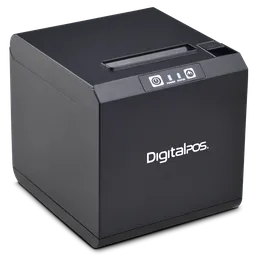
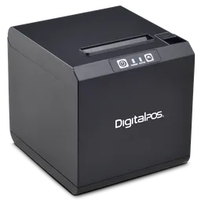

Comparativa de reproductores MP3


MP3 mini |


MP3 grande |
||||
|---|---|---|---|---|---|
| Capacidad de almacenamiento | 4GB (1.000 canciones |
8GB (2.000 canciones} |
16GB (4,000 canciones) |
30GB (7.500 canciones |
80GB (20.000 canciones) |
| Colores |


 

|
|
|
||
| Pantalla | LCD de 3 cm (diagonal) can retroiluminación | LCD de 6 cm (diagonal) con retroiluminación | |||
| Tiempo de carga | Unas 3 horas | Unas 4 horas | |||
| Unas 2 horas para alcanzar el 80% de la capacidad | |||||